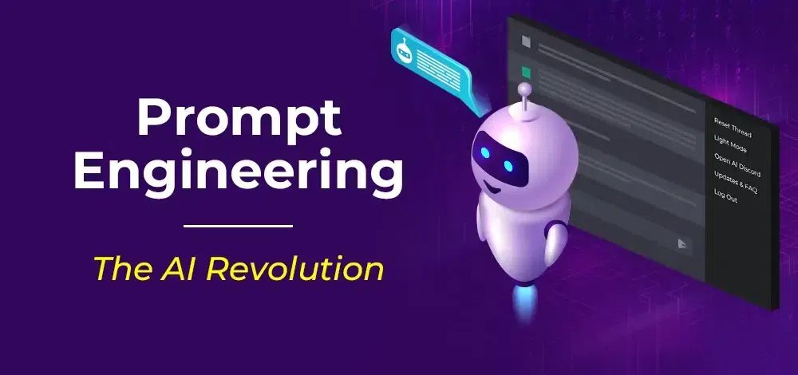

Getting Started with Prompt Engineering: A Quick Guide for Beginners
Prompt engineering is becoming an essential skill for anyone working with large language models (LLMs). Whether you're building apps, doing research, or boosting productivity, knowing how to design effective prompts can make the difference between mediocre and exceptional results.
Read More →